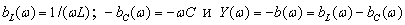
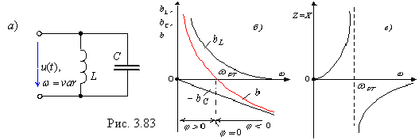

2.7.3.3. Частотные характеристики проводимостей контура
Частотные характеристики проводимостей ветвей и полной проводимости  идеального резонансного контура (R1 = R2 = 0, рис. 3.83, а) представлены на рис. 3.83, б.

Для режима резонанса токов полная проводимость идеального контура ; при этом полное сопротивление (рис. 3.83, в)
 ; при этом полное сопротивление (рис. 3.83, в)
; при этом полное сопротивление (рис. 3.83, в)